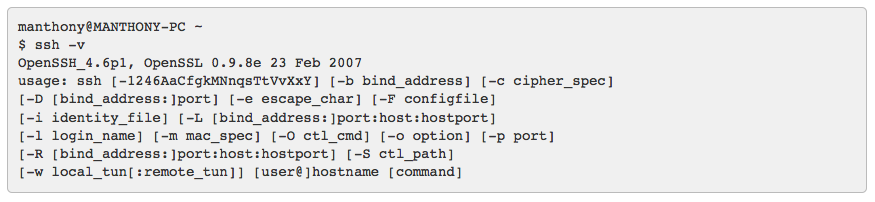
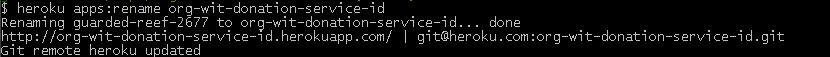

Objectives
Deploy a play app to Heroku. This will require a heroku account + a locally installed git tool set.
Git Bash
Download and install Git.
This will be used in this lab. We shall refer to as Git Bash.

All the following commands should be run within the Git Bash terminal, not the standard windows terminal (Command Prompt).
SSH Keys
This section applies only if you do not have SSH keys on your computer. We shall explain shortly how you can check whether or not keys are present.
Official Heroku documentation on managing SSH keys is available here
Your computer will communicate with Heroku using Secure Shell (SSH).
Here are brief instructions on how to check for the presence of SSH keys on your computer and to generate them if necessary.
Git Bash should have an SSH client. Verify this with the following command:
ssh -vThe response should be similar to this:

Check if you already have SSH keys by checking for the presence of the.ssh folder and if it exists, listing its contents:
ls -l ~/.sshIf keys are present then the response should be something simiar to that shown in Figure 3:

If keys are not present then generate a set with this command:
ssh-keygenAccept the default prompts and in particular when prompted for a password and to confirm the password simply hit the return key on both occasions but without typing any characters for the password.
- That is: do not password protect the keys.
Confirm that keys have been successfully generated by checking the contents of the .ssh folder which should be similar that shown in Figure 3 above.
Local Repository
You recall that we may be using a 'bootstrap.java' class to load the models. This may cause some difficulty with our deployment, so we will remove it from the project for the moment. You can do this form within Eclipse.
Now, in the spacebook project, create a file called '.gitignore'. This is a special file containing a series of patterns for project files we do NOT want uploaded to heroku.
Here are its contents:
# Ignore all dotfiles...
.*
# except for .gitignore
!.gitignore
!.classpath
!.project
# Ignore Play! working directory #
war
db
eclipse
lib
log
logs
modules
precompiled
project/project
project/target
crud/*
data/*
conf/crud/*
conf/cloudbees*
public/crud/*
target
tmp
test-result
server.pid
*.iml
*.emlStill in the same project folder, create and a file named ProcFile containing the following:
web: play run --http.port=$PORT $PLAY_OPTSNext, we need to make one significant change to the app. Open the 'Users' model and adjust the the class as follows:
@Entity
@Table(name="`User`") //This is necessary because User is a reserved word in PostGreSQL
public class User extends Model'User' is a reserved table name in the database, so we have altered the name slightly to avoid a conflict.
In Git Bash terminal cd into the folder containing your spacebook project, and create a git repository for the project:
git initAdd all files (except those matched by .gitignore) to the repo and commit them using these commands:
git add --all
git commit -m 'first commit'Verify that everything is ok by running this command
git statusThe response should as follow:

We have now established a local git repository containing only those files required to run the application. Our next step is to push this repository to the heroku service.
Heroku repository
Create an account on Heroku. Note carefully your login and password.
Download and install Heroku Toolbelt for Windows. Close and reopen Git Bash following installation of the Toolbelt.
Once installed, verify that the installation ok by typing
heroku --versionThe response should be something like:
heroku/toolbelt/3.12.1 (i386-mingw32) ruby/1.9.3(The versions numbers my be different)
Login in to your heroku account from Git Bash
heroku loginYou will be prompted for you email and password. Successful authentication will be confirmed.
Next create a new blank app and repository on Heroku as follows:
heroku createNB: The above command MUST BE ENTERED from within the project folder
The response will be something like this:

Notice the default name assigned by Heroku to the remote app.
Verify with the command
git remote -vand observe a response similar to that in Figure 2.

Now add your SSH keys to Heroku:
heroku keys:addFinally, push the local repo to Heroku:
git push heroku masterThis may take some time The response should be somewhat similar to that shown in Figure 4.

We shall now test the service: In the specific case of this lab we have been randomly assigned a remote Heroku repo named guarded-reef-267.git. The convention for construction a URI to access this repo or service can easily be deduced by studying the URI for this specific service:
http://guarded-reef-2677.herokuapp.com/api/usersThe portions /api/users is determined by how we, the developers, wrote the application (spacebook). Notice where the actual name of the repo is located in the URI:
- guarded-reef-2677Copy this URI into a browser's navigation bar: unfortunately an application error is flagged. The reason for this is that we have not set up a suitable database on Heroku. We shall attend to this shortly.
Changing name of Heroku app
We shall now change the Heroku-assigned name guarded-reef-2677 to a more meaningful name org-wit-spacebook-service-id where id is your email address excluding @, periods, underscores and so on. For example john_doe@organs.com becomes johndoeorganscom. This is just a suggestion to ensure that the name you choose for the app on Heroku will be unique.
Run the following command within the Heroku terminal:
heroku apps:rename org-wit-spacebook-service-idA typical response is shown in Figure 5:

Heroku Database
You created a Heroku app in an earlier step (using the command heroku create)
- A database was made available as part of the app creation process.
- You can verify this by running the following command:
heroku pg:infoA typical response is depicted in Figure 1.

In this case the DATABASE_URL is HEROKU_POSTGRESQL_MAUVE_URL.
Log in to Heroku website for more detailed information such as is shown here in Figure 2 for the current project.
In order to make use of this database do the following:
- Modify the application.conf file:
- Comment out any database activation statments such as, for example, db = mem.
- Add the following block to the end of the file.
#================heroku databse config config=========================
db=${DATABASE_URL}
jpa.dialect=org.hibernate.dialect.PostgreSQLDialect
jpa.ddl=update
#================end database config heroku config====================- In the Heroku terminal add and commit the changes:
git add --all
git commit -m 'database configured'
git push heroku masterThe response should be similar to that shown in Figure 3.

Test App
You can test that the application is working correctly in a number of ways, listed here:
- Run the following command: output similar to that in Figure 4 indicates your app has been successfully deployed.
heroku ps
Next run the command to open a browser: Figure 5 shows the command and additionally the response to the command and the output in the browser if the app is running correctly.
heroku openThis should open your web browser and display the application directly on the heroku platform.